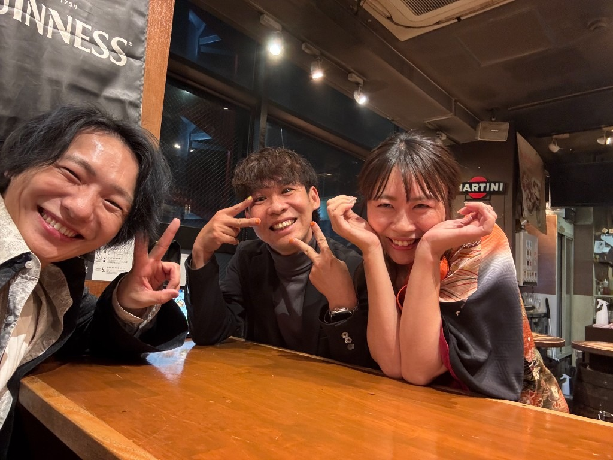
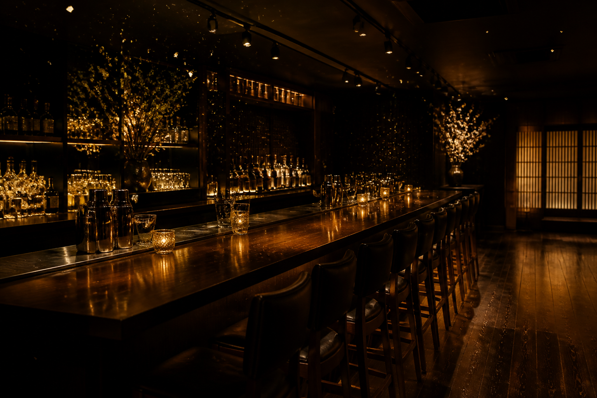
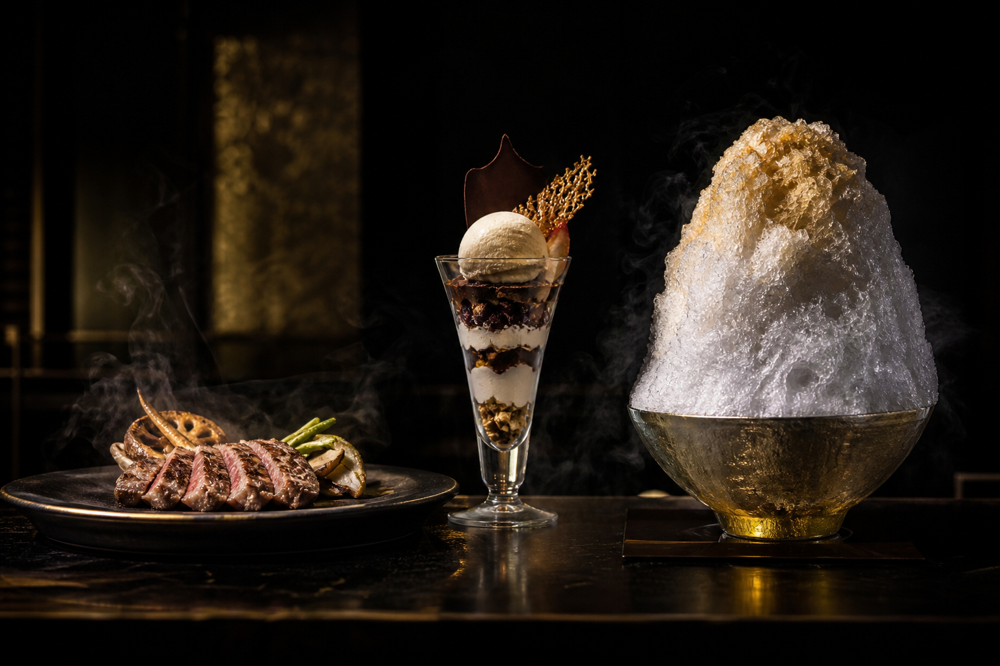

BNI GRANO · SHARE STORY
集客のプロ。
美容をアップデートするエンジニア。
行列のかき氷屋。
BNIで覚悟がつながり、同じ法人に載せた、三人の話。
山田 研二 × 宇部 光太 × あらい ひとみ
01 · STRATEGY
事業戦略支援 / オンライン秘書
01数多の店舗オーナー、経営者の成功をサポートしてきた。
02集客、求人、クラファンによる資金調達、社長の業務削減。
03ありとあらゆる方面から、事業を前に進める。
02 · UPDATE
AIエンジニア
01本気美容室 → サロンフランチャイズ → AIエンジニア。
02バラバラに見える。軸は一つ。美容業界のアップデート。
03自分のビジネスのステージが上がるたび、カテゴリを変えてきた。
04ゴールは友好的M&A。Reyel のネイルFCも展開。
03 · ICE
かき氷
01新横浜で、知らない人はいないほどの人気店。
02夏は2時間以上の行列が、日常になる。
03店のプロデュース、かき氷のFC化も実現。
04全国のイベントに引っ張りだこの、人気削り師。
BNI · YAMADA
集客のサポートが仕事だった。
BNIで業績を上げ、経営者と深く関わり、
さらなるステージへ登ると決めた。
→Reyel を日本一へ。経営参画。
→その型で、TSUKIMISOU も日本一へ。
BNI · UBE
お客様はパンパン。BNIの集客は、いらないと思っていた。
4年サークルのノリで、マイペース。
ある日電話が、まったく噛み合わない。
理由山田は日本一。自分は「もう少し伸びたらいいかな」。
決意恥ずかしくなった。ベットしてくれ、と口説いた。

BNI · ARAI
仕事は、遊び！！！あるBODで、宇部のスローガンが引き金になった
01大繁盛。伸ばす必要は、もうない。動機は仕事＋エンジョイ。
02宇部プレジデント期に、書記兼会計。
03愛情のかき氷は、もっと広めるべきだ、とプッシュ。
THE TRIGGER
BNIメンバーからのさらなるアドバイス。
文化締めの文化を、かき氷ではやらせる。
引き金そのワクワクが、最後の一押しになった。
決意TSUKIMISOU のフランチャイズ化。

INCORPORATION · 2026
やり方は、いくつも模索した。
残ったのは、覚悟だけだった。
リターンも、喜びも、
リスクも、辛さも、
みんなで背負う。
ＲＧ株式会社 — ルートグラーノ。
マッチングより先に、価値基準が近かった。
VALUES
仲良し三人組ではない。言い合う。怒って、怒られる。
それでも目的は一つ。笑い合える。
TRACTION
ただ、動きはもう始まっている。
NORTH STAR
通過点にすぎない。
それぞれが、単独でも到達したことのある数字だ。
この強力な三人でなら、もっと早期に届く。
一人で届く場所を、三人で超える。
NOVAS CHAPTER · NOW
あらいひとみ D を中心に、
新チャプター NOVAS を立ち上げている。
元請けと下請け、顧客の奪い合い、
形ばかりのチームは、排除する。
こだわりを棚にしまえる、勇気のある人へ。
→ 次の言葉 / 次へ F 全画面